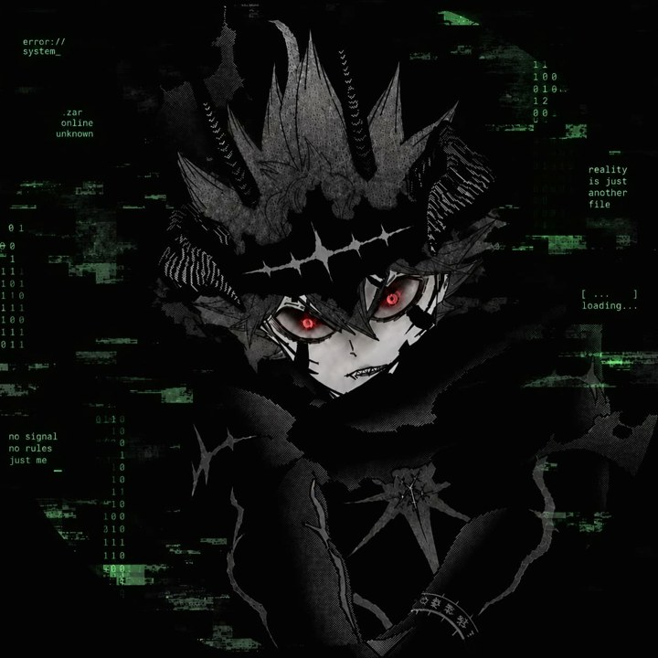
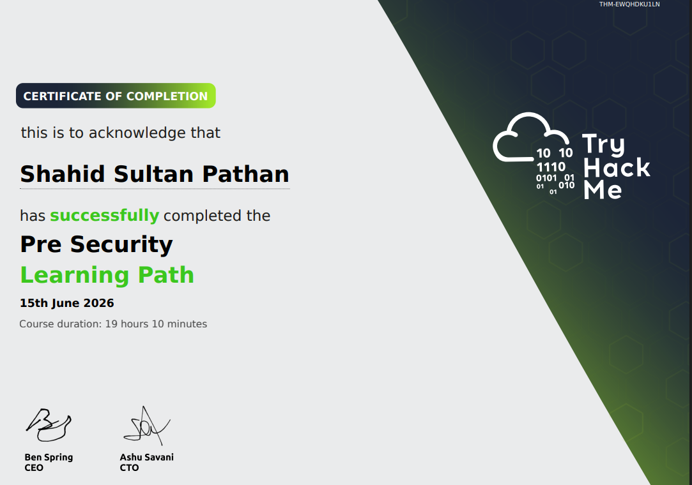

Networking
FundamentalsTCP/IP and IP addressing, TCP and UDP, DNS, DHCP, ARP, NAT, HTTP and HTTPS.
Looking for internships and entry-level roles
BCA CYBER SECURITY STUDENT
aka KUROXASTA
I'm Shahid Pathan, also known as KUROXASTA. This page shows where I stand today, where I'm heading, and every step in between.

@KUROXASTA
// 01 about
I'm a BCA Cyber Security student, passionate about cybersecurity, ethical hacking, networking, Linux, security tools, and how computer systems actually work.
I prefer a practical approach over theory alone. I build my foundation through TryHackMe labs, practice exercises, technical documentation, and regular revision.
I'm still a student and I don't claim to be an expert. I'm building toward internships and entry-level roles, one step at a time.
// 02 goal
MY GOAL
This is the road I'm following to get there.
Finished 15 June 2026.
Working through it now.
Next learning path, after Cyber Security 101.
Next learning milestone.
A hands-on project to show what I've learned.
Entry-level SOC and security roles
// 03 skills
Built through hands-on labs. These are developing skills, not claims of professional experience.
TCP/IP and IP addressing, TCP and UDP, DNS, DHCP, ARP, NAT, HTTP and HTTPS.
Kali Linux, Windows fundamentals, PowerShell basics, Linux command-line basics.
Packet capture and analysis basics with Wireshark and tcpdump.
Nmap fundamentals, port discovery, common scan options, basic reconnaissance.
Active Directory, Organizational Units, Group Policy Objects, introductory Kerberos.
Beginner-level concepts and common web technologies.
// 04 certificates

Awarded to Shahid Sultan Pathan
Completed 15 June 2026 · 19 hours 10 minutes
A learning-path completion certificate, not a professional certification.
// 05 contact
I'm looking for advice, collaboration, and internship or entry-level opportunities in cybersecurity.